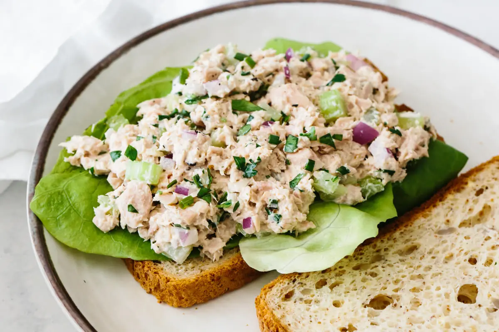

Tuna Salad

Description
Making tuna salad at home is one of the easiest, most satisfying meals you can whip up from pantry ingredients
Ingredients
- Canned Tuna
- Mayonnaise
- Celery
- Red Onion
- Parsley
- Dijon Mustard
- Salt and Pepper
Steps
- Drain tuna
- Add and mix all the ingredients to the bowl